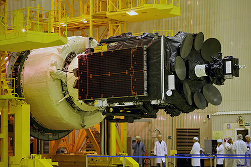
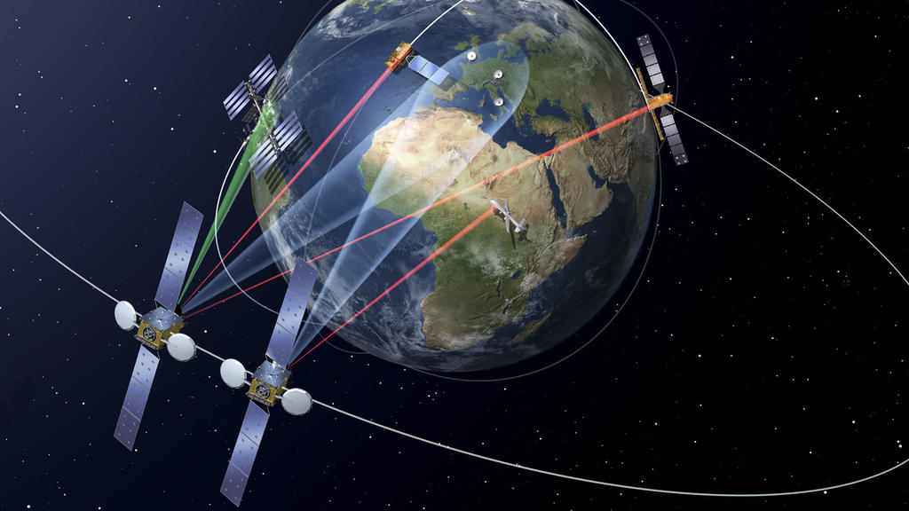

Established in 1979, Inmarsat is a British company that provides telecommunications
solutions that involves satellites. It provides services to a variety of governments,
agencies, and private companies around the world.
A project by Son 401.
Purpose
The main purpose of the company is to provide telecommunication services to a variety of users, such as governments, aid agencies, media outlets, or businesses using terminals, which communicate with ground stations via its several geostationary satellites that makes it cover most areas of Earth.
Established in 1979, Inmarsat focuses its services to users who have a need to reach remote regions, or regions not reliably covered by traditional networks, including but not limited to oceans, seas, or rural regions (such as Africa) around the world.
Apart from its for-profit commercial services, Inmarsat also offers a "global maritime distress and safety services" (GMDSS) system to aircraft and ships for free, as a benefit to society.
Inmarsat-5 is the newest type of satellites owned by Inmarsat. This type of satellites are manufactured by Boeing, which is a aerospace company based in the USA.
Inmarsat operates four satellites of this type, which cost around $1.6 billion US dollars. These satellites replaced the oldest generation of satellites, which were around 20 years old, and they were decommissioned once these I-5 satellites were launched into orbit.
The agreed lifetime of these generation of satellites is 15 years.
Each Inmarsat-5 satellite will carry 89 Ka-band beams that will operate in geosynchronous orbit with flexible global coverage. The satellites are designed to generate approximately 15 kilowatts of power at the start of service and approximately 13.8 kilowatts at the end of their 15-year design life. To generate such high power, each spacecraft's two solar wings employ five panels each of ultra triple-junction gallium arsenide solar cells. The BSS-702HP carries the xenon ion propulsion system (XIPS) for all on-orbit maneuvering. When operational, the Inmarsat-5 satellites will provide Inmarsat with a comprehensive range of global mobile satellite services, including mobile broadband communications for deep-sea vessels, in-flight connectivity for airline passengers and streaming high-resolution video, voice and data.

More satellites
Please follow the links below to learn more about the rest of the satellites that Inmarsat operates presently, and in the past.
All of Inmarsat's spacecraft operates in a geostationary orbit - 35,786km (22,236 miles) above the Earth.

While having a geostationary orbit restricts the areas that a satellite can operate in, but because Inmarsat has 13 satellites around the globe, they can fully communicate and relay data with each other, giving them a full coverage of the Earth.
It is also better than having a single satellite on a polar orbit because a single satellite cannot have full Earth coverage at one time, which directly supports the mission of the company, which is to provide undisrupted and reliable communication to a variety of users worldwide.
Flight MH370 went missing in March 2014 with 239 passengers and crew on board during a flight from Kuala Lumpur and Beijing and despite a hunt for it at a cost of £80 million,the main body of the aeroplane has not been found.
The analysis of communications between Malaysia Airlines Flight 370 and Inmarsat's satellite telecommunication network provide the only source of information about Flight 370's location and possible in-flight events after it disappeared from radar coverage at 2:22 Malaysia Standard Time (MYT) on 8 March 2014 (17:22 UTC, 7 March), one hour after communication with air traffic control ended and the aircraft departed from its planned flight path while over the South China Sea.